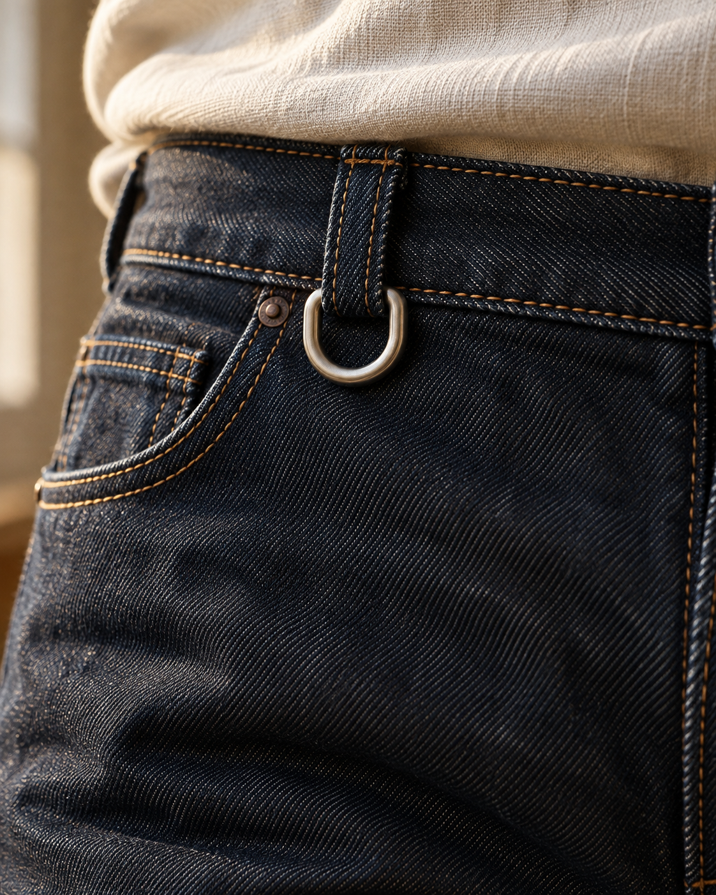
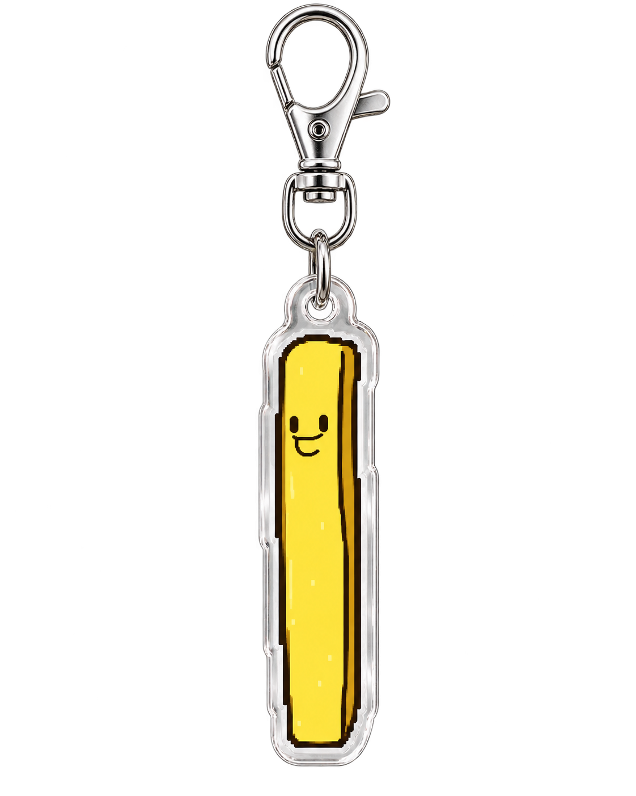
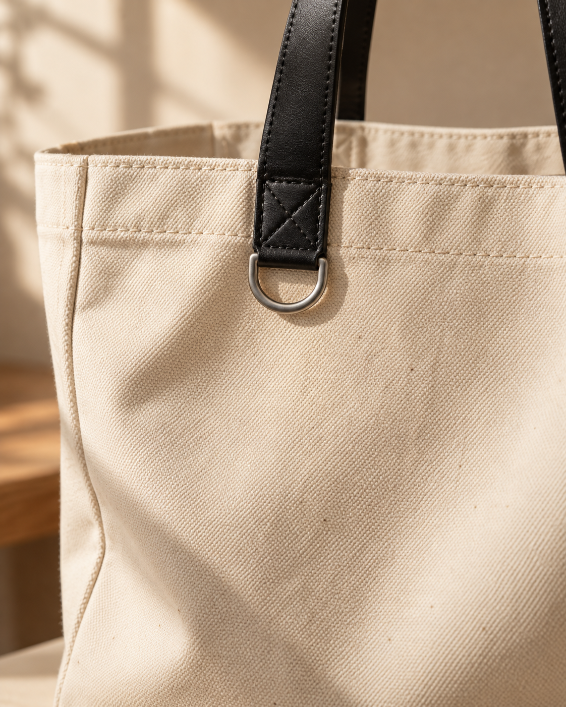
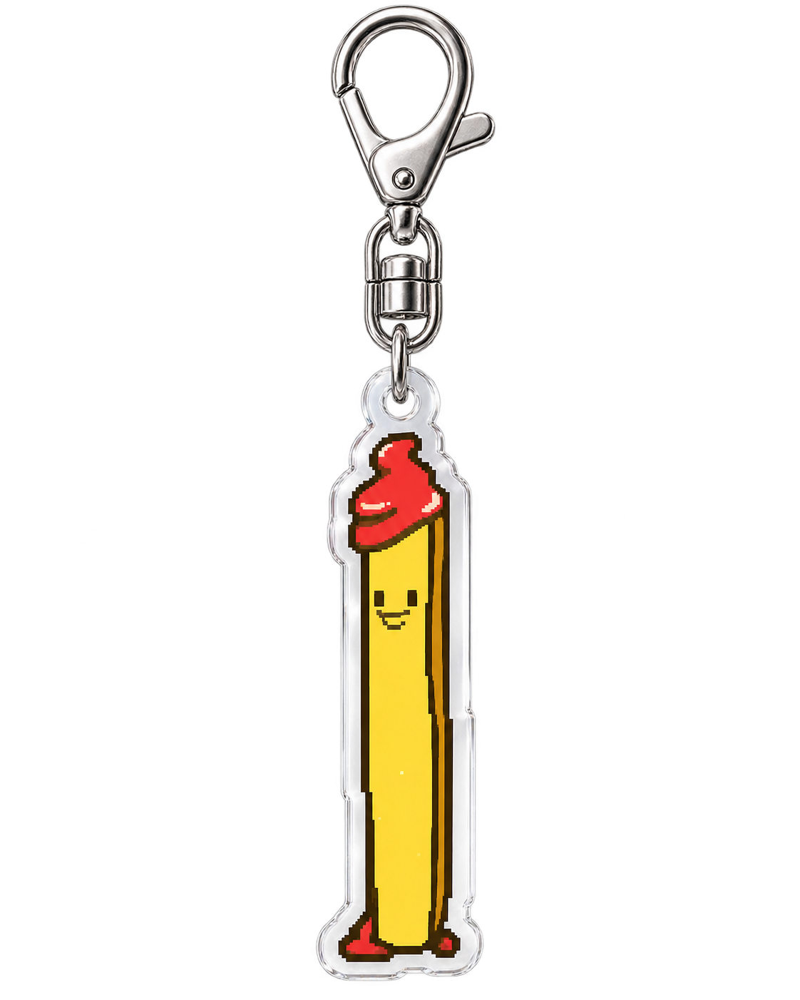
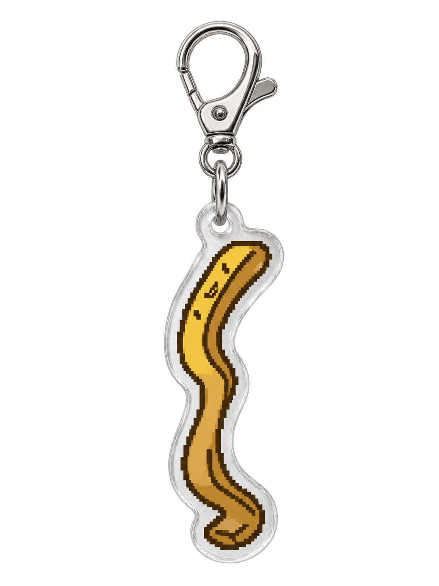

모두 다른 모양,
하나의 감띠즈.
반듯한 감띠부터 휘어진 감띠, 둘이 붙어 다니는 감띠까지. 감자튀김의 여러 모습을 각기 다른 캐릭터로 담았습니다.
PROJECT OVERVIEW / GAMTTIZ
감띠즈는 서로 다른 모습의 감자튀김 캐릭터 14종을 일러스트, 아크릴 키링, 홀더와 브랜드 그래픽으로 선보이는 프로젝트입니다.
반듯한 감띠부터 휘어진 감띠, 둘이 붙어 다니는 감띠까지. 감자튀김의 여러 모습을 각기 다른 캐릭터로 담았습니다.
빨강과 노랑의 경쾌한 색, 간결한 표정과 실루엣으로 캐릭터마다 다른 인상을 만들고 키링과 홀더로 이어지게 구성했습니다.
TYPE & COLOR
영문 포인트에는 직접 만든 감띠즈 영문 글꼴을 사용합니다. 한글 본문은 화면에서 읽기 편한 글꼴을 적용했습니다.
GAMTTIZ
영문 감띠즈 영문 글꼴 · Light / Regular / Bold
한글 Wanted Sans Variable
CHARACTER ILLUSTRATIONS
KEYRING MOCKUPS
원본 키링 이미지를 고화질 연출 사진과 조합한 시안입니다.




